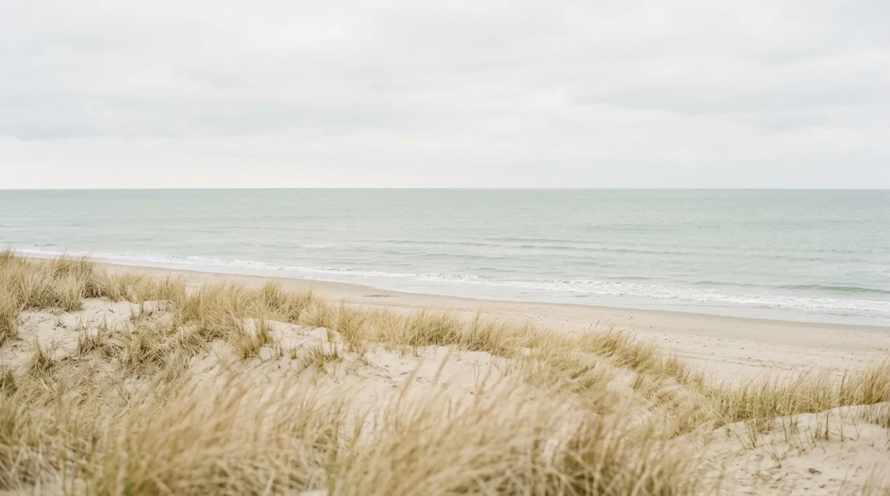

La propiedad,
entre estadías.
Coordinamos las tareas que necesitan a alguien en el lugar.
- Ingresos, salidas y entrega de llaves
- Limpieza entre reservas
- Revisión del estado de la propiedad
- Coordinación de mantenimiento y proveedores
VILLA GESELL · GESTIÓN PARA PROPIETARIOS
Coordinamos la atención a huéspedes, la limpieza y el mantenimiento. Organizamos las reservas y la comunicación para que puedas seguir tu propiedad a distancia.

PARA PROPIETARIOS QUE VIVEN LEJOS
Un alquiler requiere más que una publicación. Definimos quién se encarga de cada tarea y cómo te mantenemos al tanto.
Coordinamos las tareas que necesitan a alguien en el lugar.
La tecnología tiene una función concreta: ordenar fechas, consultas y tareas.
Acordamos qué información vas a recibir, por qué canal y con qué frecuencia.
El alcance, los horarios de atención y las responsabilidades se acuerdan antes de comenzar, según la ubicación y las necesidades de cada propiedad.
CÓMO TRABAJAMOS
Si no estás en Gesell, necesitás saber quién resuelve cada situación. Ese acuerdo es el punto de partida de la gestión.
Revisamos el equipamiento, los accesos, los proveedores y cómo se alquila hoy.
Acordamos tareas, honorarios, autorizaciones y qué hacer ante un imprevisto.
Definimos cómo registrar reservas, coordinar tareas e informarte sobre gastos y novedades.
PROPIEDADES EN GESTIÓN
SERVICIOS COMPLEMENTARIOS
Fotografía, identidad, contenido y desarrollo web para mostrar mejor tu alojamiento. Se pueden contratar por separado o sumar a la gestión.
PREGUNTAS FRECUENTES
Ese es el enfoque de Manto. Relevamos la propiedad en Villa Gesell y definimos qué tareas podemos asumir, quién las realiza y cómo vas a recibir la información.
No. Podemos acordar la operación local, la gestión de reservas o servicios puntuales. La propuesta detalla las responsabilidades de cada parte.
Antes de comenzar acordamos el canal, la frecuencia y el contenido del seguimiento: reservas, gastos, tareas e incidencias. También definimos qué decisiones requieren tu autorización.
No necesariamente. Revisamos los canales que ya usás y organizamos el trabajo a partir de ellos. Si necesitás mejorar fotos, textos o web, lo presupuestamos por separado.
Según la ubicación, el tipo de propiedad y las tareas que delegues. Los honorarios y los gastos operativos se detallan en la propuesta.
En Propiedades están las fichas y los canales de consulta de cada alojamiento.
CONTACTO
Contanos dónde está, cómo la alquilás hoy y de qué tareas necesitás que nos ocupemos. Con esa información podemos preparar una propuesta.
Hablar sobre mi propiedad ↗